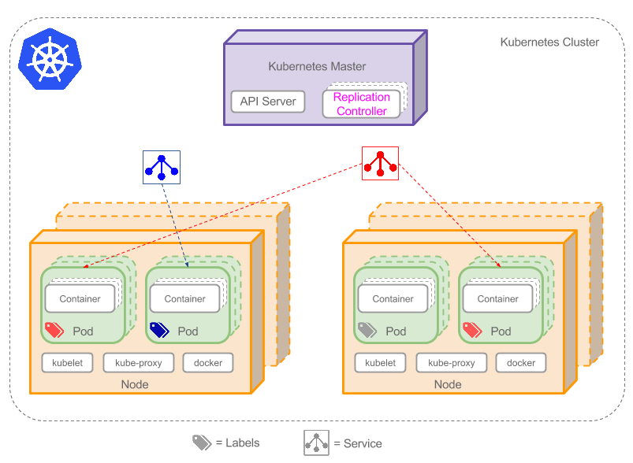

Label
Table of Contents
Label是附着到 object 上（例如Pod）的 键值对 ，可以在创建object的时候指定，也可以在object创建后随时指定
Labels的值对系统本身并没有什么含义，只是对用户才有意义
"labels": { "key1" : "value1", "key2" : "value2" }
Kubernetes最终将对labels做 索引 和 反向索引 用来优化查询和watch，在UI和命令行中会对它们排序
不要在label中使用大型、非标识的结构化数据，记录这样的数据应该用annotation
动机
Label能够将 组织架构 映射 到 系统架构 上，这样能够更便于微服务的管理，可以给object打上如下类型的label：
"release" : "stable", "release" : "canary" "environment" : "dev", "environment" : "qa", "environment" : "production" "tier" : "frontend", "tier" : "backend", "tier" : "cache" "partition" : "customerA", "partition" : "customerB" "track" : "daily", "track" : "weekly" "team" : "teamA","team:" : "teamB"
语法和字符集
Label key的组成：
- 不得超过63个字符
可以使用前缀，使用/分隔，前缀必须是DNS子域，不得超过253个字符，系统中的自动化组件创建的label必须指定前缀
kubernetes.io/由kubernetes保留
- 起始必须是字母（大小写都可以）或数字，中间可以有连字符、下划线和点
Label value的组成：
- 不得超过63个字符
- 起始必须是字母（大小写都可以）或数字，中间可以有连字符、下划线和点
selector
Label不是唯一的，很多object可能有相同的label
通过label selector，客户端／用户可以 指定 一个 object集合 ，通过label selector对object的集合进行操作。Label selector有两种类型：
- equality-based ：可以使用 = 、 == 、 != 操作符，可以使用 逗号 分隔多个表达式
- set-based ：可以使用 in 、 notin 、 ! 操作符
- 还可以没有操作符，直接写出某个label的key，表示过滤有某个key的object而不管该key的value是何值，!表示没有该label的object
示例
$ kubectl get pods -l environment=production,tier=frontend $ kubectl get pods -l 'environment in (production),tier in (frontend)' $ kubectl get pods -l 'environment in (production, qa)' $ kubectl get pods -l 'environment,environment notin (frontend)'
在API object中设置label selector
在 service 、 replicationcontroller 等object中有对pod的label selector，使用方法只能使用 等于 操作，例如：
selector:
component: redis
在 Job 、 Deployment 、 ReplicaSet 和 DaemonSet 这些object中，支持 set-based 的过滤，例如：
selector:
matchLabels:
component: redis
matchExpressions:
- {key: tier, operator: In, values: [cache]}
- {key: environment, operator: NotIn, values: [dev]}
例如Service通过label selector将同一类型的pod作为一个服务expose出来：

另外在 node affinity 和 pod affinity 中的label selector的语法又有些许不同，示例如下：
affinity:
nodeAffinity:
requiredDuringSchedulingIgnoredDuringExecution:
nodeSelectorTerms:
- matchExpressions:
- key: kubernetes.io/e2e-az-name
operator: In
values:
- e2e-az1
- e2e-az2
preferredDuringSchedulingIgnoredDuringExecution:
- weight: 1
preference:
matchExpressions:
- key: another-node-label-key
operator: In
values:
- another-node-label-value